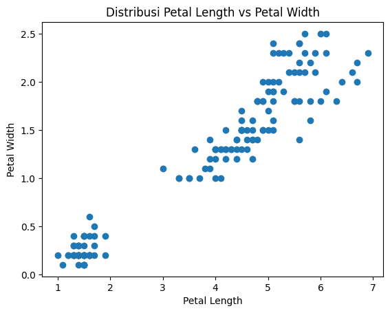
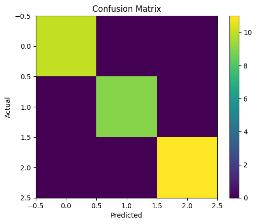

Analisis Data Menggunakan Naive Bayes (Iris Dataset)#
Iris Dataset#
Tujuan#
Menerapkan algoritma Naive Bayes menggunakan Python
Memahami pola data pada Iris Dataset
Mengevaluasi performa model klasifikasi
import pandas as pd
import matplotlib.pyplot as plt
from sklearn.model_selection import train_test_split
from sklearn.naive_bayes import GaussianNB
from sklearn.metrics import accuracy_score, confusion_matrix, classification_report
Load Dataset#
Dataset yang digunakan adalah Iris Dataset yang berisi 150 data bunga.
df = pd.read_csv("../IRIS.csv")
df.head()
| sepal_length | sepal_width | petal_length | petal_width | species | |
|---|---|---|---|---|---|
| 0 | 5.1 | 3.5 | 1.4 | 0.2 | Iris-setosa |
| 1 | 4.9 | 3.0 | 1.4 | 0.2 | Iris-setosa |
| 2 | 4.7 | 3.2 | 1.3 | 0.2 | Iris-setosa |
| 3 | 4.6 | 3.1 | 1.5 | 0.2 | Iris-setosa |
| 4 | 5.0 | 3.6 | 1.4 | 0.2 | Iris-setosa |
Pengecekan Data#
Dilakukan pengecekan untuk melihat struktur data dan memastikan tidak ada missing value.
df.info()
<class 'pandas.core.frame.DataFrame'>
RangeIndex: 150 entries, 0 to 149
Data columns (total 5 columns):
# Column Non-Null Count Dtype
--- ------ -------------- -----
0 sepal_length 150 non-null float64
1 sepal_width 150 non-null float64
2 petal_length 150 non-null float64
3 petal_width 150 non-null float64
4 species 150 non-null object
dtypes: float64(4), object(1)
memory usage: 6.0+ KB
df.describe()
| sepal_length | sepal_width | petal_length | petal_width | |
|---|---|---|---|---|
| count | 150.000000 | 150.000000 | 150.000000 | 150.000000 |
| mean | 5.843333 | 3.054000 | 3.758667 | 1.198667 |
| std | 0.828066 | 0.433594 | 1.764420 | 0.763161 |
| min | 4.300000 | 2.000000 | 1.000000 | 0.100000 |
| 25% | 5.100000 | 2.800000 | 1.600000 | 0.300000 |
| 50% | 5.800000 | 3.000000 | 4.350000 | 1.300000 |
| 75% | 6.400000 | 3.300000 | 5.100000 | 1.800000 |
| max | 7.900000 | 4.400000 | 6.900000 | 2.500000 |
df.isnull().sum()
sepal_length 0
sepal_width 0
petal_length 0
petal_width 0
species 0
dtype: int64
Hasil menunjukkan bahwa dataset tidak memiliki missing value dan seluruh fitur berupa numerik.
Visualisasi Data#
Visualisasi dilakukan untuk melihat pola distribusi data.
plt.scatter(df['petal_length'], df['petal_width'])
plt.xlabel("Petal Length")
plt.ylabel("Petal Width")
plt.title("Distribusi Petal Length vs Petal Width")
plt.show()

Terlihat bahwa data dapat dipisahkan dengan cukup jelas berdasarkan fitur petal.
Hal ini membantu model dalam melakukan klasifikasi dengan baik.
Preprocessing Data#
Memisahkan fitur (X) dan target (y).
X = df.drop('species', axis=1)
y = df['species']
Split Data#
Data dibagi menjadi training (80%) dan testing (20%).
X_train, X_test, y_train, y_test = train_test_split(
X, y, test_size=0.2, random_state=42
)
Training Model#
Model dilatih menggunakan Gaussian Naive Bayes.
model = GaussianNB()
model.fit(X_train, y_train)
GaussianNB()In a Jupyter environment, please rerun this cell to show the HTML representation or trust the notebook.
On GitHub, the HTML representation is unable to render, please try loading this page with nbviewer.org.
GaussianNB()
Prediksi dan Evaluasi#
y_pred = model.predict(X_test)
accuracy = accuracy_score(y_test, y_pred)
print("Akurasi:", accuracy)
Akurasi: 1.0
cm = confusion_matrix(y_test, y_pred)
print("Confusion Matrix:\n", cm)
Confusion Matrix:
[[10 0 0]
[ 0 9 0]
[ 0 0 11]]
print("Classification Report:\n", classification_report(y_test, y_pred))
Classification Report:
precision recall f1-score support
Iris-setosa 1.00 1.00 1.00 10
Iris-versicolor 1.00 1.00 1.00 9
Iris-virginica 1.00 1.00 1.00 11
accuracy 1.00 30
macro avg 1.00 1.00 1.00 30
weighted avg 1.00 1.00 1.00 30
Analisis Hasil#
Model menunjukkan performa yang sangat baik dalam mengklasifikasikan data.
Akurasi tinggi pada data testing
Sebagian besar data diklasifikasikan dengan benar
Kesalahan klasifikasi sangat kecil
Berdasarkan classification report:
Precision tinggi
Recall tinggi
F1-score stabil
Hal ini disebabkan oleh:
Distribusi data antar kelas cukup jelas
Fitur petal sangat membedakan antar kelas
plt.imshow(cm)
plt.title("Confusion Matrix")
plt.xlabel("Predicted")
plt.ylabel("Actual")
plt.colorbar()
plt.show()

Kesimpulan#
Naive Bayes efektif untuk klasifikasi data sederhana
Dataset Iris sangat cocok untuk pembelajaran machine learning
Model menghasilkan performa tinggi tanpa preprocessing kompleks
Pemahaman terhadap data sangat penting dalam analisis